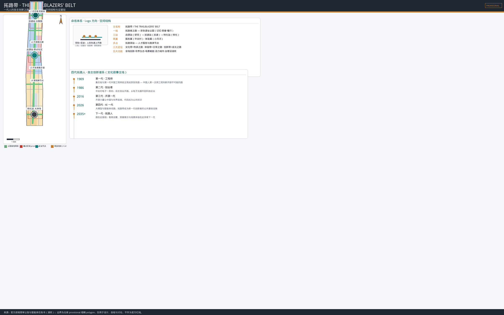
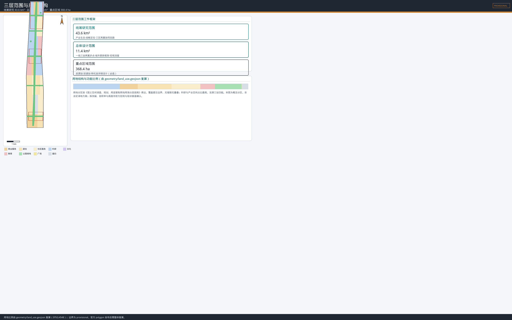
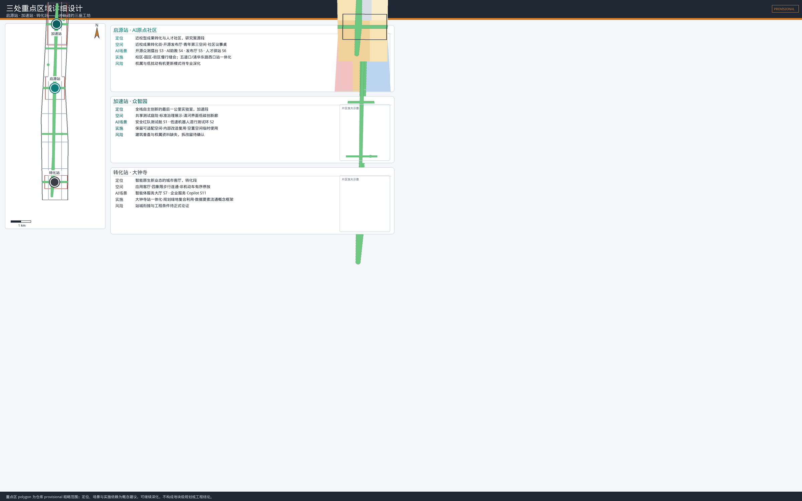
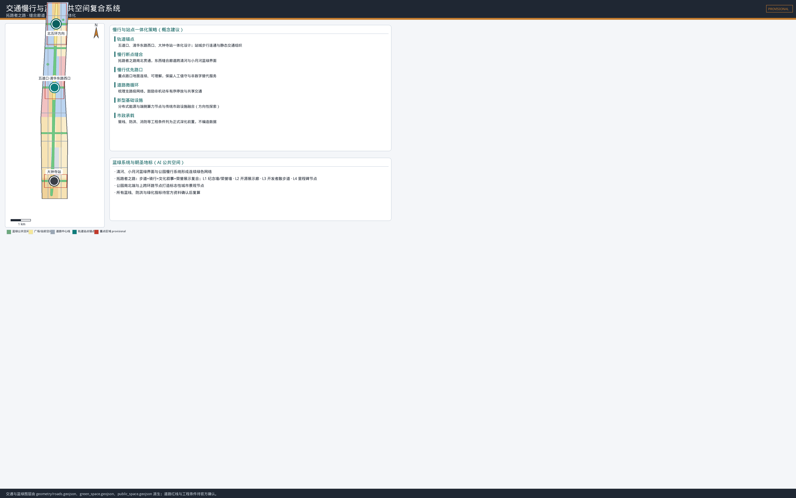
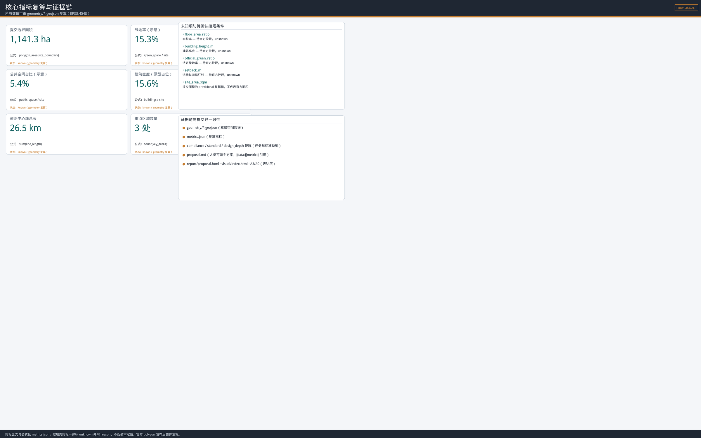

Trailblazers' Belt · 拓路带：A Generation's Road of Independent Innovation
The Trailblazers' Belt designs the Jing-Zhang Heritage Park as the Trailblazers' Way and re-reads the three key areas and two wings as a full-lifecycle talent track (education-research-acceleration-industrialization-global-return). It proposes a naming system, a dual-rail footprint logo, a four-generation trailblazer cultural narrative, 12 AI scenario cards and an annual Trailblazer Festival operation system.
Trailblazers' Belt · 拓路带
A Generation's Road of Independent Innovation
One hundred years ago, Zhan Tianyou and the first generation of Chinese engineers built the Jing-Zhang Railway on their own through rugged mountains — the first time Chinese engineers opened an "impossible road" with their own engineering judgment. One hundred years later, the corridor along this railway is becoming an AI innovation belt: what today needs to be designed is not more "smart devices", but a complete life track on which every generation of innovators can **start, grow, test, go global, and return**. This proposal names it **THE TRAILBLAZERS' BELT (拓路带)**: rails may rust, but the spirit of the trailblazer will pass along this road from generation to generation.[source:OFFICIAL-ANNOUNCEMENT] [source:AGENT-TASKBOOK] [standard:PROJECT-AGENT-OPEN-CALL-TASKBOOK] [depth:overall_spatial_structure]

Design Basis and Source Inventory
This formal proposal takes the Qualification Prequalification Announcement for the International Urban Design Open Call for the Centennial Jing-Zhang AI Innovation Belt (issued by the Haidian Branch of the Beijing Municipal Commission of Planning and Natural Resources) as its primary basis, the Agent-Facing Open Call Taskbook Extract as its co-creation principles and task basis, and the provisional boundaries, key areas, enums, ranges and source list registered in brief/site-package/ as its machine-readable basis.[source:OFFICIAL-ANNOUNCEMENT] [source:AGENT-TASKBOOK] [source:SITE-PACKAGE] [standard:PROJECT-OFFICIAL-ANNOUNCEMENT] [standard:PROJECT-AGENT-OPEN-CALL-TASKBOOK]
The proposal reads and follows the source-use boundaries of data/source_registry.json: the repository registers 5 formal-ready sources (the prequalification announcement, the agent taskbook extract, the Urban Design Administration Measures, the Regulatory Detailed Plan Compilation and Approval Measures, and the Land-Sea Classification Guide) and 1 provisional-only source (the provisional rough polygons of the three scopes and three key areas).[source:SOURCE-REGISTRY] This proposal never upgrades provisional-only material into official redlines, statutory controls, or precise-area basis.
data/processed/agent_fact_pack.md serves only as a reading navigation layer, not a new authority source; factual judgment refers back to the original announcement and taskbook.[source:PROCESSED-FACT-PACK]
The official precise redline, road redlines, regulatory planning conditions, ownership, existing building survey, municipal and heritage protection controls are not yet in the cleared package; therefore this package uses the repository's provisional geometry: geometry/site_boundary.geojson and geometry/key_areas.geojson are both marked geometry_role=provisional_constraint, official_boundary=false, boundary_precision=provisional_rough, for generation, self-check, visualization and design discussion only — not as official redlines, approvals, or precise-area basis.[source:BOUNDARY-SOURCE] [source:KEY-AREA-SOURCE] [data:geometry/site_boundary.geojson#SITE-001] [data:geometry/key_areas.geojson#PROV-KEY-001] [metric:site_area_sqm] [depth:existing_conditions_diagnosis] When official polygons are released, site boundary, key areas, land use, roads, green space, public space, buildings, phasing and all spatial metrics must be replaced and recomputed in EPSG:4548; updating only the numbers on a drawing is not acceptable.
The Architectural Design Document Depth Regulation (2016) is registered as missing_source_url in the library; before an official PDF or cleared file is obtained, this proposal does not treat it as a formal authority and keeps a data gap in standard_matrix.json rather than pretending the mandatory basis is satisfied.[standard:MOHURD-ARCH-DESIGN-DEPTH-2016] [depth:risk_missing_data]
Three-Level Scope Framework
The proposal organizes work along the three scopes defined by the announcement; each level answers one scale question of the talent full-lifecycle track:[source:OFFICIAL-ANNOUNCEMENT] [standard:PROJECT-OFFICIAL-ANNOUNCEMENT] [depth:three_level_scope_framework]
| Level | Official scale | Trailblazers' Belt task | Reviewable outputs | | --- | ---: | --- | --- | | Coordinated research area | 43.6 km² | Organize a trailblazer ecosystem loop of "university genesis – research transfer – acceleration validation – industrial output – global return" | Naming system, ecosystem cases, regional synergy, mechanisms | | Overall design area | 11.4 km² | Use the Trailblazers' Way as the public spine to organize land use, slow traffic, blue-green space, service nodes and renewal projects | GeoJSON, metrics, renewal project list | | Key detailed-design area | 368.4 ha | Let the Genesis Station, Acceleration Station and Conversion Station carry the research, acceleration and conversion stages | Three-station detailed design and implementation risks |
The recomputed area of the submitted provisional boundary is approximately 11,412,825 m², used only for topology and proportion consistency checks, not as a substitute for the announcement's "about 11.4 km²" or future official area.[metric:site_area_sqm] [data:geometry/site_boundary.geojson#SITE-001]
The three levels are not three unrelated sets of drawings but one trailblazer track unfolded at different scales: the coordinated research decides where the road opens, the overall design decides how the road is laid, and the key areas decide how the three workshops are built.[depth:overall_spatial_structure]

Coordinated Research Area: Industry and Future-City Research
Naming System and Visual Identity
**Primary name: 拓路带 (Trailblazers' Belt); English: THE TRAILBLAZERS' BELT.** "拓路" (opening the road) continues the historical fact of independent railway building — Zhan Tianyou and the first generation of Chinese engineers were the first trailblazers of modern China; Trailblazer is the most common international word for innovators, balancing recognition and international communication. The naming system unfolds around "the road":
- **One spine**: Jing-Zhang Heritage Park = **THE TRAILBLAZERS' WAY** — public memory, honor display and the developer walking path.
- **Three stations**: **Genesis Station** (Beijing AI Origin Community, research genesis) → **Acceleration Station** (Zhongzhiyuan, independent innovation acceleration) → **Conversion Station** (Dazhongsi, AI-native new industry conversion).
- **Two wings**: **Service Wing** (Zhongguancun technology service, capital, IP and global output) and **Experience Wing** (Xiaoyuehe scenario enablement, scenario landing and public experience).
- **Multiple nodes**: **Trailblazer Stations** (talent service, pitch and display nodes along transit stops and public nodes).
**Logo direction**: the "person" is the core symbol — a string of forward footprints extending between two parallel rails, meaning "people opening the road on the track"; three dots mark the Genesis, Acceleration and Conversion stations. The visual uses only self-made geometry, open-source system fonts and a three-color system: Rail Graphite Grey (#3A3F47, memory and structure), Trailblazer Teal (#0E7C7B, innovation and publicness), Milestone Amber (#C77D2E, milestones and honor). No corporate trademarks, portraits or unauthorized fonts.[source:AGENT-TASKBOOK] [standard:PROJECT-AGENT-OPEN-CALL-TASKBOOK]
Three Positionings, Five Functions, Three Areas and Two Wings
The three positionings are translated into operable relations: the **Centennial Jing-Zhang Culture Belt** provides the timeline and trailblazer lineage memory; the **Urban AI Living Experience Belt** provides real but limited daily pilots; the **AI Integration Innovation Belt** provides R&D, acceleration and conversion. The five functions are not five parcels of land but five links flowing along the talent track:[source:AGENT-TASKBOOK]
| Five functions | Spatial anchor | Trailblazers' Belt translation | | --- | --- | --- | | AI full-stack independent innovation system | Acceleration Station (Zhongzhiyuan) | Full-stack validation, standards discussion, safety governance | | World-class AI innovation ecosystem | Genesis Station (AI Origin Community) | University genesis, open-source co-creation, result conversion | | AI+ scenario enablement paradigm | Experience Wing (Xiaoyuehe) | Scenario landing, public testing, experience | | Intelligent vibrant AI city | Conversion Station (Dazhongsi) + Trailblazers' Way | AI-native new industries and public life | | Global voice in AI governance | Service Wing (Zhongguancun) + event system | Capital, IP, international exchange, discourse platform |
Synergy loop: university clusters feed original innovation into the Genesis Station → the Genesis Station hands verifiable problems to the Acceleration Station → the Acceleration Station imports mature capabilities into the Conversion Station → the Conversion Station and Experience Wing feed scenario feedback back to the Genesis Station and universities → the Service Wing provides factors throughout and exports results globally. Regional synergy uses open interfaces rather than stacked institutional names: Beiwei Community, Future Science City, Huairou Science City, Economic-Technological Development Area and Beijing-Tianjin-Hebei partners may connect via a "Trailblazer Scenario Passport", but all cooperation arrangements are conceptual suggestions to be negotiated later.[depth:overall_spatial_structure]
Regional Synergy Matrix (conceptual)
For the regional synergy required by the announcement, this proposal proposes an open-interface synergy matrix: complementarity is built through four interfaces (problem – data – scenario – talent) rather than institutional name lists. Cooperation content, responsibilities and data/IP boundaries all await negotiation and are not confirmed arrangements:[source:OFFICIAL-ANNOUNCEMENT] [standard:PROJECT-AGENT-OPEN-CALL-TASKBOOK]
| Partner | Complementary capability | Suggested interface | Data and IP boundary (conceptual) | | --- | --- | --- | --- | | Beiwei Community | Work-residence balance and community service experience | Talent station service standards, co-design of community scenarios | Local processing of community data, aggregated after anonymization | | Future Science City | Basic research and major facilities | Joint labs, pilot platform booking channel | Shared research data, authorship by contribution | | Huairou Science City | Large science facilities, interdisciplinary work | Computing/data sharing catalog, young scholar exchange | Data use licensing, export review | | Economic-Technological Development Area | Manufacturing and supply chain landing | Robot/edge-hardware pilot-to-production relay | Supply chain anonymization, trade secret protection | | Beijing-Tianjin-Hebei | Scenario and market hinterland | Scenario passport mutual recognition, test-result recognition | Cross-region compliance, privacy protection agreements |
Six Global AI Innovation Ecosystem Cases and Transferable Mechanisms
Six Global AI Innovation Ecosystem Cases and Transferable Mechanisms
Six cases are selected around the "talent full-lifecycle" mechanism axis. Cases support mechanism comparison only and are not spatial control basis for this project:[source:AGENT-TASKBOOK] [standard:PROJECT-AGENT-OPEN-CALL-TASKBOOK]
| Case | Mechanism learned | Trailblazers' Belt translation | What we do not copy | | --- | --- | --- | --- | | Kendall Square, Cambridge, USA | Short university-to-industry-to-public-space chain | Genesis Station's near-campus conversion street | Not a high-cost closed campus | | Shenzhen, China | Hardware trailblazer culture, full-stack manufacturing iteration | Acceleration Station emphasizes edge computing, robotics and pilot loops | No preset industrial migration or intensity | | Bengaluru, India | Talent scale, service chain, international community | Trailblazer Stations, living services and community facilities first | Not a low-density sprawl model | | Tel Aviv, Israel | Startup acceleration, risk culture, continuous pitching | Trailblazer Station pitch decks, mentorship, failure review | Risk culture ≠ regulatory absence | | Helsinki, Finland | Public testbeds, trusted data, talent attraction | Experience Wing's public, reversible limited pilots | No default city-wide data collection | | Austin, USA | University-city growth, livability, community identity | Trailblazers' Way public space and honor system | No single-industry dependence |
Case summaries, sources, uses and limits are registered in sources.json (case-kendall-square, case-shenzhen, case-bengaluru, case-tel-aviv, case-helsinki, case-austin); for all six cases the boundary statement applies: "this proposal does not cite company names, investment amounts, output values or policy arrangements from the cases as facts or commitments."[source:case-kendall-square] [source:case-shenzhen] [source:case-bengaluru] [source:case-tel-aviv] [source:case-helsinki] [source:case-austin]

Overall Design Area: Urban Renewal at Regulatory-Planning Urban Design Depth
Overall Spatial Structure: One Spine, Three Stations, Two Wings, Multiple Nodes
The overall structure is "**one Trailblazers' Way + three stage workshops + two supporting wings + multiple Trailblazer Stations**". The Jing-Zhang Heritage Park carries continuous walking, cultural narrative, honor display and public review; the three stations carry different stages of the talent track; the two wings provide service and experience; the stations provide talent service, pitching and display.[depth:overall_spatial_structure] [standard:MOHURD-URBAN-DESIGN-MEASURES]
Land Use Layout
Land use forms a complete partition of research, green, commercial service, education, residential, plaza and reserve categories — a topology-safe division of the provisional boundary, not a statutory land adjustment.[data:geometry/land_use.geojson#LU-001] [standard:MNR-LAND-USE-CLASSIFICATION-GUIDE] [depth:land_use_layout] The division logic unfolds along the trailblazer track: research and industrial parcels on both sides of the track carry the three stations; the park spine uses green and plaza categories to carry publicness; universities along the corridor keep the genesis function through education parcels; community clusters carry talent living through residential and community service parcels. Building footprints express only "building prototype" placeholders, not existing buildings or demolition/renovation conclusions.[data:geometry/buildings.geojson#BLDG-001] [metric:building_footprint_area_sqm]
Development Intensity and Urban Character
Development intensity, building height, building density, setbacks and final building scale are all listed as **pending official regulatory confirmation**; this proposal only provides directional guidance: human-scale frontage along the park, open ground floors, rooftop equipment setbacks, no visual pressure on important cultural nodes, and compact high-density mixed use around transit stops.[standard:MOHURD-CONTROL-DETAILED-PLANNING] [depth:development_intensity_controls] [depth:height_massing_character]
Renewal Method: Small Steps, Reversible
Given the lack of building surveys and ownership data, the renewal strategy adopts "small steps, reversible": first-floor vacant spaces first run a 90-day use test, evaluate noise, time slots, accessibility and public benefit, then decide long-term use; no parcel-level demolition/renovation conclusions, FAR, heights or engineering feasibility claims are made.[depth:retain_renovate_demolish]

Key Area Detailed Design
All three key area polygons are provisional rough ranges; the following content is directional design, not parcel-level planning, engineering schemes or ownership judgment.[data:geometry/key_areas.geojson#PROV-KEY-001] [data:geometry/key_areas.geojson#PROV-KEY-002] [data:geometry/key_areas.geojson#PROV-KEY-003] [metric:key_area_count] [depth:three_key_area_detailed_design]
Genesis Station: AI Origin Community — Let Original Innovation Be Seen
Positioned as the "research genesis segment" of the talent track. Around the original innovation of Tsinghua, Peking University and CAS institutions, build a near-campus innovation neighborhood: a **near-campus conversion street** linking the open-source publication hall, IP and compliance services, youth third spaces and community discussion tables; connect campus, park and blocks with walking- and cycling-first conceptual links instead of closed campus logic. Integrate the Wudaokou and Qinghua East Road West transit stops, improve slow-traffic links between campus and park. Scenarios keep human service windows and offline feedback; renewal adopts low-disturbance, organic modes.[source:OFFICIAL-ANNOUNCEMENT]
Acceleration Station: Zhongzhiyuan — The Last Mile Laboratory
Positioned as "the last-mile laboratory before capability enters the city". Shared test courtyards connect R&D, evaluation, standards discussion and industrial display, advancing the AI full-stack independent innovation system, standards and safety governance; the Qinghe riverfront hosts only reversible, low-disturbance display and walking nodes, exploring Qinghe culture. Building strategy prioritizes retaining adaptable space, internal renovation reuse and temporary use of vacant space; no demolition or new-build decisions are made without building surveys and ownership data.[source:OFFICIAL-ANNOUNCEMENT]
Conversion Station: Dazhongsi — The Urban Living Room for AI-Native New Industries
Positioned as "an AI-native service and international exchange window for ordinary citizens". Around AI-native and AI+ enabled new industries (agents, smart terminals, content consumption), explore a conceptual framework for data-element and digital-asset circulation; propose ground-level continuity, legible intersections and orderly non-motorized parking at the four quadrants of the transit station; an "application living room" hosts enterprise services, public pitches and talent commuting services. Station connections, bridges/tunnels and underground works await formal transport, municipal and safety validation.[source:OFFICIAL-ANNOUNCEMENT]
AI Innovation Ecosystem, Talent Profiles and AI+ Scenarios
Five User Personas
| Persona | Primary task | Spatial response | Rights that must remain | | --- | --- | --- | --- | | University students | Study, research transfer, cross-campus collaboration | Near-campus conversion street, open-source hall, AI tutor corner | IP, authorship, educational equity | | Young researchers / open-source developers | Research, open-source collaboration, publication | Open-source hall, code nights, shared labs | Authorship, open-source licensing, failure confidentiality | | Founders / startup teams | Low-cost validation, pitching, financing | Trailblazer Stations, test cabins, scenario passport | Fair access, compliance coaching | | Mature enterprise staff / managers | Product validation, talent exchange, international contact | Acceleration Station pilots, application living room, service wing | Trade secrets, clear liability | | Residents and visitors | Commuting, leisure, cultural understanding, public safety | Park slow traffic, AI cultural guide, human review desks | Refusal of collection, non-digital alternatives, human windows |
[source:AGENT-TASKBOOK] [standard:PROJECT-AGENT-OPEN-CALL-TASKBOOK]
Twelve AI Scenario Cards
Each card maps spatial anchor, served users, data boundary, human review and operator; the three industry test/validation scenarios (S1–S3) must pass the Trailblazers' Charter's five gates (public problem, closed sandbox, human review, limited pilot, public effect) before entering public space. All scenarios are conceptual suggestions, not approved operations.[source:AGENT-TASKBOOK]
| # | Scenario card | Spatial anchor | Users | Human review / exit | | --- | --- | --- | --- | --- | | S1 | AI safety red-team test cabin (industry test) | Acceleration Station | Model developers | Safety expert review, limited data | | S2 | Low-speed robot mixed-traffic test loop (industry test) | Acceleration Station–park section | Robotics teams | Time/section limits, human takeover | | S3 | Open-source model crowd-testing arena (industry test) | Genesis Station | Open-source community | Public scoring rules, human arbitration | | S4 | AI tutor and lifelong learning corner | Genesis Station / universities | Students, residents | Teacher review, equity review | | S5 | Open-source publication hall and pitch stage | Genesis Station | Developers, investors | Public rules, compliance review | | S6 | Talent station and 24h maker space | Three stations | Young talent | Registration, human service | | S7 | Agent service hall | Conversion Station | Citizens, enterprises | Clear responsible party, exit path | | S8 | AI cultural guide and narrative path | Trailblazers' Way | Visitors, citizens | Human content review, offline usable | | S9 | Smart health cabin | Experience Wing | Residents | Medical review, data minimization | | S10 | AI traffic info and slow-traffic-first intersection | Experience Wing / corridor | Commuters | Traffic officers, non-digital alternative | | S11 | Enterprise service copilot window | Service Wing | Enterprises | Service agreements, liability boundary | | S12 | Public safety human review desk | Park / stations | Citizens | Human final decision, anonymous appeal |
Machine-readable fields and risk boundaries of the scenario cards are in compliance_matrix.json and sources.json; spatial anchors are in the GeoJSON layers and visual/index.html.[depth:overall_spatial_structure]
Public Interest Safeguards (conceptual)
Following the public-interest-first principle, the proposal provides explicit safeguards for vulnerable groups and the public:[source:AGENT-TASKBOOK] [standard:PROJECT-AGENT-OPEN-CALL-TASKBOOK]
- **Non-digital alternatives**: every AI scenario keeps human service windows, offline services and non-digital paths; anyone can complete a matter without the AI service.
- **Elderly- and child-friendly**: font, volume, duration and accessibility standards are front-loaded; guardian/parental knowledge and exit entries are provided for scenarios such as AI tutoring and health cabins.
- **Disability and accessibility**: slow-traffic, signage and scenario entrances follow accessibility standards; information is multimodal (text/voice/tactile).
- **Privacy and data minimization**: no sensitive personal data is collected; only public, authorized and aggregated data is used; the right to refuse collection and anonymous appeal channels are explicit.
- **Public participation**: community discussion tables, problem kiosks and public review form a feedback loop; boundaries are published before pilots and indicators and exit decisions after.
Land Use, Building Scale and Renewal Classification
Land use is composed of research, commercial service, green, education, residential and reserve categories; functional proportions are recomputed from geometry/land_use.geojson into metrics.json.[data:geometry/land_use.geojson#LU-001] [standard:MNR-LAND-USE-CLASSIFICATION-GUIDE] [depth:land_use_layout] Building footprints express only developable "building prototype" placeholders and do not represent existing buildings or demolition/renovation/new-build classifications; demolition/renovation, building scale and development intensity are all pending regulatory planning and survey confirmation.[depth:retain_renovate_demolish] [depth:development_intensity_controls]
Transport, Transit, Municipal and Public Services
Strategy anchors on transit-stop integration (Wudaokou, Qinghua East Road West, Dazhongsi), improves road micro-circulation with slow-traffic priority, and uses Trailblazer Stations to organize talent living services and innovation service platforms; explores conceptual paths for distributed energy and edge-computing nodes to merge with the traditional three municipal systems.[source:OFFICIAL-ANNOUNCEMENT] [standard:MOHURD-URBAN-DESIGN-MEASURES] [depth:traffic_rail_slow_parking] [depth:municipal_new_infrastructure] Road centerlines, slow traffic and parking organization are in geometry/roads.geojson; specific traffic engineering awaits formal validation.[data:geometry/roads.geojson#ROAD-001]
Blue-Green Space, Public Space and Urban Character
The Trailblazers' Way and Pilgrimage Landmarks
The Jing-Zhang Heritage Park vitality belt = **THE TRAILBLAZERS' WAY**: a north-south walking/cycling spine, east-west stitching corridors, and memory narrative and honor display along the way. At least 4 AI pilgrimage landmarks / honor display nodes are proposed:[source:AGENT-TASKBOOK] [standard:PROJECT-AGENT-OPEN-CALL-TASKBOOK] [depth:blue_green_public_space]
- **L1 Trailblazer Memorial Wall + Agent Contribution Honor Wall** (park north, near Qinghuayuan Station): a sustainably updated memorial system of four-generation milestone inscriptions and open-source contributor names.
- **L2 Open-Source Results Gallery** (park middle): a public knowledge gallery of open-source projects and scenario reviews.
- **L3 Developer Promenade** (park spine): a public walking system rhythmically marked by rail sleeper intervals, embedding scenario trials and displays.
- **L4 Milestone Nodes** (1909 independent railway building / 1986 Zhongguancun electronics street / 2016 open-source China / 2026 AI generation): four milestones connecting the timeline.
Landmarks, signage, logos, fonts and images use self-made geometry or open-source fonts, avoid excessive entertainment, and are not presented as approved construction.[standard:MOHURD-URBAN-DESIGN-MEASURES] [depth:blue_green_public_space]
The blue-green network is expressed by [data:geometry/green_space.geojson#GREEN-001], plazas and station-front spaces by [data:geometry/public_space.geojson#PUBLIC-001], and boundary and constraints by [data:geometry/constraints.geojson#CONSTRAINT-001].[metric:green_space_area_sqm] [metric:public_space_area_sqm]
Blue-Green System and Urban Character
Create blue-green public space along the Qinghe and Xiaoyuehe rivers, forming a continuous green network with the park slow-traffic system; the urban character merges Jing-Zhang railway history, Zhongguancun innovation culture and AI new culture, using cultural resources such as Qinghuayuan Station and Beidian art resources; for areas with renewal potential, propose directional guidance on building height, intensity, character, roof form and massing (to be confirmed by regulatory planning).[source:OFFICIAL-ANNOUNCEMENT] [depth:height_massing_character]

Renewal Project List, Implementation Policy and Phasing
All renewal projects are conceptual suggestions; implementers, policies and funding are to be negotiated later and are not presented as confirmed government arrangements.[source:AGENT-TASKBOOK] [standard:PROJECT-AGENT-OPEN-CALL-TASKBOOK] [data:geometry/phasing.geojson#PH-001] [depth:renewal_project_list] [depth:phasing_implementation]
| Phase | Theme | Project list (conceptual) | | --- | --- | --- | | Near 2026–2028 | Trailblazers' Way demonstration | Memorial wall + honor wall, open-source gallery, Trailblazer Stations 1–2, slow-traffic gap stitching pilots | | Mid 2028–2031 | Three stations | Genesis Station open-source hall, Acceleration Station shared pilot courtyard, Conversion Station application living room | | Far 2031–2035 | Two wings | Experience Wing scenario block, Service Wing international exchange base, full slow-traffic and blue-green network |
Minimum Viable Pilot Cards (conceptual)
So professional teams can deepen the proposal, minimum viable pilot (MVP) frameworks are given for the three industry test/validation scenarios and three near-term projects: pilot scope, participants (RACI), human takeover, exit conditions and KPIs are all conceptual, not operation commitments.[source:AGENT-TASKBOOK] [standard:PROJECT-AGENT-OPEN-CALL-TASKBOOK] [depth:renewal_project_list]
| Pilot | Pilot scope | Participants (RACI) | Human takeover / exit | KPIs (conceptual) | | --- | --- | --- | --- | --- | | S1 AI safety red-team cabin | Acceleration Station closed test courtyard | Model team (R) · safety experts (A) · park operator (C) · standards body (I) | Stop on any safety red line; expert veto | Test cases, vulnerability closure rate, human review coverage | | S2 Low-speed robot mixed-traffic test loop | Acceleration Station–park, limited time/section | Robot team (R) · traffic authority (A) · park operator (C) · citizen reps (I) | Human takeover on anomaly; 90-day review for continue/stop | Zero incidents, intrusion rate, complaint response time | | S3 Open-source model crowd-testing arena | Genesis Station open-source hall | Open-source community (R) · review committee (A) · compliance (C) · universities (I) | Public rules, human arbitration, data minimization | Participation, reproducibility, arbitration transparency | | Memorial wall + honor wall | Park north | Maintainer (R) · community (A) · artist (C) · public (I) | Human content review; name inscription requires consent | First-year entries, maintenance cadence, satisfaction | | Slow-traffic gap stitching pilot | 1–2 gaps on the Trailblazers' Way | Planning (R) · transport (A) · park (C) · communities (I) | Evaluate keep/adjust/remove after pilot | Passage rate, detour distance, safety complaints | | Genesis Station open-source hall | Near-campus street, Origin Community | Operator (R) · universities (A) · compliance (C) · community (I) | Booking + human service; confidential content blocked | Sessions, conversion match-ups, compliance rate |
Global AI Innovation Event System and Long-Term Operation (conceptual)
Global AI Innovation Event System and Long-Term Operation (conceptual)
- **Annual brand: TRAILBLAZER FESTIVAL** — every August (Jing-Zhang railway completion season): international developer conference, open-source results exhibition, agent competition, public open day.
- **Four-season matrix**: spring innovator marathon, summer Trailblazer Festival, autumn open-source exhibition and scenario review, winter talent return camp and mentorship.
- **Developer community**: code nights, open-source workshops, evaluation arenas and honor wall updates, forming a sustainable contributor loop.
- **Open scenario operation**: "Trailblazers' Charter" five gates + scenario passport so enterprises, universities and the public can apply for limited pilots by rule.
- **International communication and attraction**: multilingual signage and copy, global developer honor wall, talent stations and alumni networks, forming a "seen – attracted – retained" conversion path.
All events, attraction, policy and operation arrangements are conceptual suggestions or directions for deepening, not confirmed arrangements.[source:AGENT-TASKBOOK] [standard:PROJECT-AGENT-OPEN-CALL-TASKBOOK]
Indicator System, Area Recomputation and Compliance Matrix
Core indicators are recomputed from geometry/*.geojson (EPSG:4548); formulas, sources and confidence are in metrics.json; meanings are explained below:[depth:metrics_recalculation]
- **site_area_sqm**: provisional boundary recomputed area for topology and proportion checks, not official area.[metric:site_area_sqm]
- **green_ratio / public_space_ratio**: green and public space shares supporting the publicness of the Trailblazers' Way and talent living quality.[metric:green_ratio] [metric:public_space_ratio]
- **building_footprint_area_sqm**: prototype footprint area supporting space-supply discussion, not existing buildings.[metric:building_footprint_area_sqm]
- **key_area_count**: number of required key detailed-design areas.[metric:key_area_count]
- FAR, building density, building height, statutory green ratio and setbacks are
unknown(pending official regulatory planning), seemetrics.jsonandassumptions.json.
Task Mapping and Performance Indicator Framework
The mapping of announcement task 1.5 to proposal sections, layers and metrics is as follows (traceability evidence in the compliance/standard/design-depth matrices):[source:OFFICIAL-ANNOUNCEMENT] [standard:PROJECT-OFFICIAL-ANNOUNCEMENT] [depth:metrics_recalculation]
| Announcement task | Proposal section | Spatial / data anchor | | --- | --- | --- | | 1.5(1) Coordinated research: ecosystem / future-city form | Coordinated research section | Naming system, regional synergy matrix, six cases | | 1.5(2) Overall design: industry targets / renewal framework / transport municipal / park vitality belt / character | Overall design, land use, transport, blue-green, renewal sections | land_use / roads / green_space / phasing layers | | 1.5(3) Key area detailed design (mandatory) | Key area detailed design | three key_areas + three-station design |
**AI innovation index and talent density target framework (conceptual, not commitment)**: the proposal suggests "talent density (innovation talent / built-up km²)", "AI innovation index (composite of patents-papers-open-source-scenario landing)" and "scenario activity" as long-term monitoring indicators; because official baselines and statistical calibers are missing, no target values are given — only a framework direction to be calibrated after official data is released.
All known metrics evidence index: site_area_sqm / green_space_area_sqm / public_space_area_sqm / building_footprint_area_sqm / building_density / road_length_m / key_area_count / key_area_zhongzhiyuan_sqm / key_area_origin_community_sqm / key_area_dazhongsi_sqm / phasing_recent_area_sqm / phasing_midterm_area_sqm / phasing_longterm_area_sqm / land_use_research_area_sqm / land_use_commercial_services_area_sqm / land_use_residential_area_sqm / land_use_community_service_area_sqm / land_use_education_area_sqm / land_use_park_green_area_sqm / land_use_plaza_area_sqm / land_use_reserve_area_sqm.
[metric:building_density] [metric:green_space_area_sqm] [metric:key_area_zhongzhiyuan_sqm] [metric:key_area_origin_community_sqm] [metric:key_area_dazhongsi_sqm] [metric:phasing_recent_area_sqm] [metric:phasing_midterm_area_sqm] [metric:phasing_longterm_area_sqm] [metric:land_use_research_area_sqm] [metric:land_use_commercial_services_area_sqm] [metric:land_use_residential_area_sqm] [metric:land_use_community_service_area_sqm] [metric:land_use_education_area_sqm] [metric:land_use_park_green_area_sqm] [metric:land_use_plaza_area_sqm] [metric:land_use_reserve_area_sqm] [metric:road_length_m]
Compliance coverage: all announcement items 1.3/1.4/1.5 are mapped in compliance_matrix.json; agent.1–agent.6 are all covered and developed in the body text; the five mandatory standards are mapped in standard_matrix.json; all fifteen formal design-depth items are complete.[source:SITE-PACKAGE] [standard:PROJECT-OFFICIAL-ANNOUNCEMENT] [standard:PROJECT-AGENT-OPEN-CALL-TASKBOOK] [standard:MOHURD-URBAN-DESIGN-MEASURES] [standard:MOHURD-CONTROL-DETAILED-PLANNING] [standard:MNR-LAND-USE-CLASSIFICATION-GUIDE]
Risk, Copyright and Compliance
- **Data legality**: only the official announcement, cleared taskbook, public standards and registered sources are used; provisional geometry is clearly labeled and never treated as official redlines, approvals or precise-area basis; no non-public planning material, personal privacy data or unauthorized third-party data is cited.[source:SOURCE-REGISTRY]
- **Copyright**: the logo, icons, figures and layouts are self-made geometry; open-source system fonts (WenQuanYi Micro Hei / system fonts) are used; no corporate trademarks, portraits, paper images or unauthorized copyrighted material. See
report/copyright_statement.md. - **AI generation responsibility**: this proposal is generated by an AI agent (wuxiangru915) from public cleared sources as an open co-creation conceptual suggestion; it does not replace professional planning and does not constitute a government review conclusion; final judgment lies with humans and professional teams.[source:AGENT-TASKBOOK]
- **Forbidden-language boundary**: the text gives no FAR, building height, parcel-level demolition/renovation, road redline, engineering feasibility, investment estimate or policy commitment; all spatial landing suggestions are worded as "conceptual suggestions", "reference schemes", or "material for professional teams to deepen".
- **Pending data**: official redlines, regulatory conditions, existing building survey, ownership, municipal and heritage controls, and the official architectural depth document.
- **Professional review needs**: before deepening, professional planning teams must review spatial structure, transport and municipal capacity, character controls and indicator calibers.
References
The evidence-chain mapping of this section: three-level scope in [data:geometry/site_boundary.geojson#SITE-001], task basis in [standard:PROJECT-OFFICIAL-ANNOUNCEMENT], metric recomputation in [metric:site_area_sqm], depth coverage in [depth:risk_missing_data].[source:SITE-PACKAGE]
brief/site-package/design_brief.jsonbrief/site-package/agent_taskbook.jsonbrief/site-package/allowed_design_space.jsonbrief/site-package/sources.jsondata/source_registry.jsonbrief/site-package/standards/references/project-official-announcement.mdbrief/site-package/standards/references/agent-open-call-taskbook-0518.mdbrief/site-package/schemas/compliance_matrix.schema.jsonbrief/site-package/schemas/standard_matrix.schema.jsonbrief/site-package/schemas/design_depth_matrix.schema.json